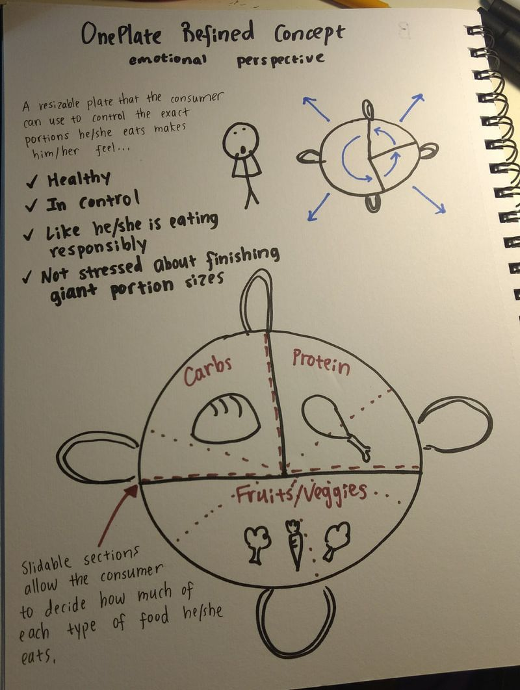
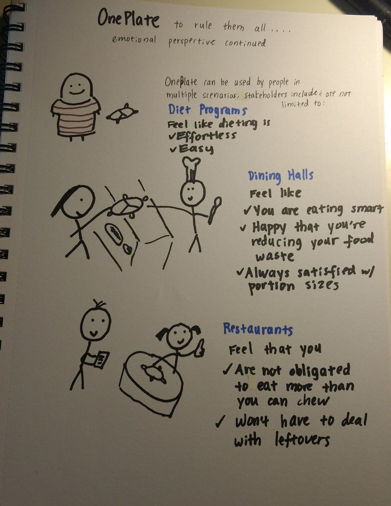
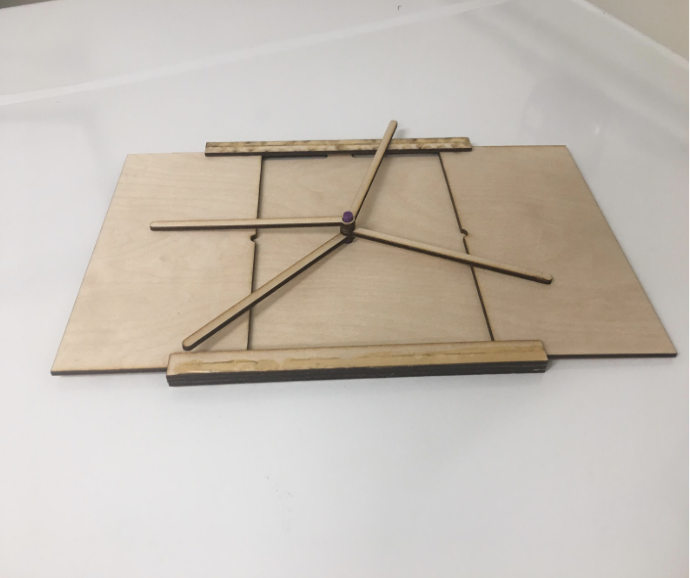
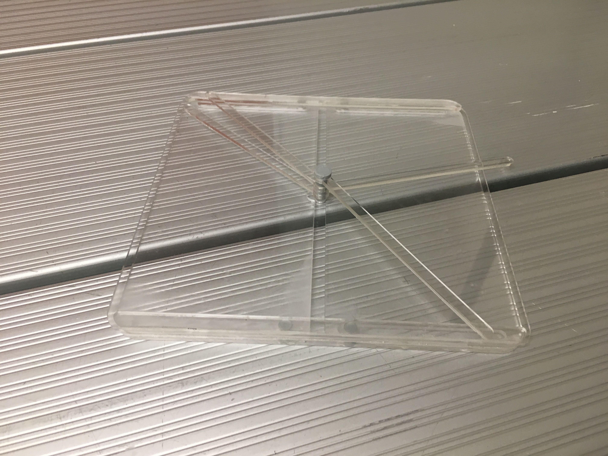
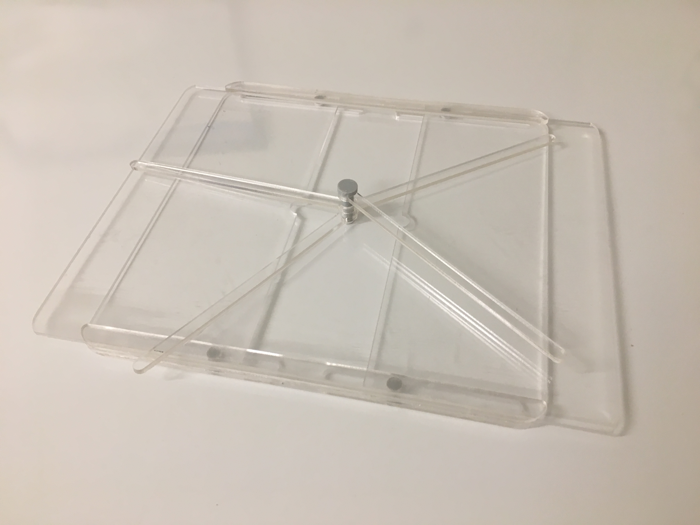
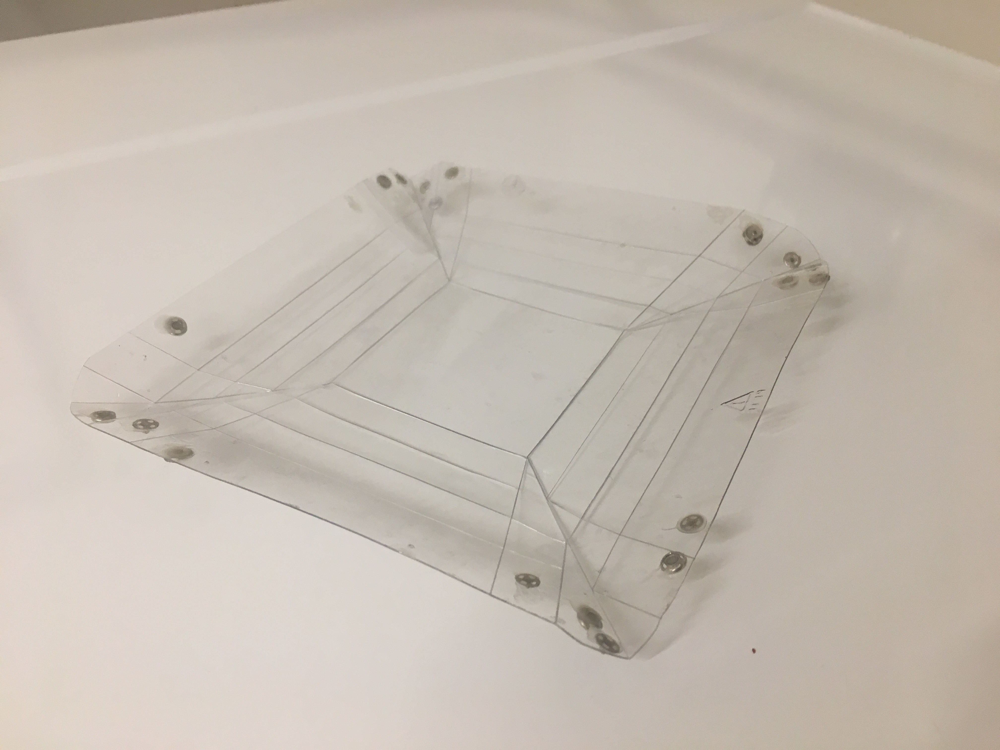
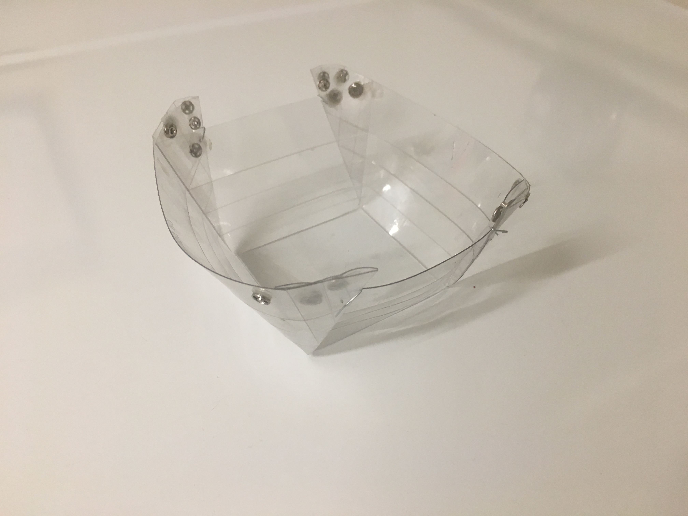

The Concept
After a few rounds of ideation, we decided on a plate that could shrink or expand to adjust it's size to improve portion control.


First Prototype

For our first prototype, we laser cut out pieces from wood to assemble into what we invisioned: a plate which controllable surface area and dividers. We used this protoype to conduct usability tests by asking people to change the size of the plate themselves and serve themselves plastic/fake food. From our first usability tests, feedback included comments such as that the material was off-putting since most people, especially dining halls, don't use wooden plates and that our plates would be difficult to stack together.
Second Iteration
We were limited with what materials we could prototype with because we were using our school's makerspace, but given what was learned from our first test, we switched to acrylic. We also made the dividers removeable for easier washing and so that plates could be stacked. We intended for the divider to be like another utesil, like another spoon or fork, that you grab before the plate so you can toggle it in line and then hand to the dining hall worker or before you serve yourself at home.
Second Prototype


From our second round of usability tests, people appreciated the fact that the prototype was not wood, but felt that there were too many moving places and were concerned with how sanitary it would be to reuse the plate. People thought that food that got stuck between the moving parts would be difficult to clean. Our professor also brought up the concern that our plate did not have a rim.
Final Prototype


For our final iteration and prototype, we redesigned OnePlate in order to not have moving parts but still have a toggleable functionality. Our final design is simply a sheet of plastic that was scored so it could be folded into different sizes and held together by snap closures. We focused on being able to change the surface area of the bottom of the plate.